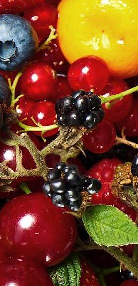
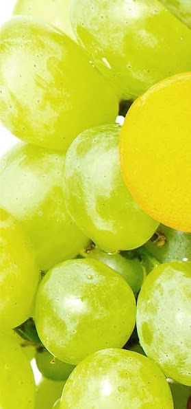

Iets bijzonders doen voor uw werknemers?
Uw werknemers laten zien dat er om ze gedacht wordt?
Dat kan simpel en voordelig, door te zorgen dat ze tijdens het werk een lekker vers stukje fruit kunnen eten, in plaats van een ongezonde snack.
MAYMARK
vers fruit service
aan de inhoud van deze website kunnen geen rechten worden ontleend